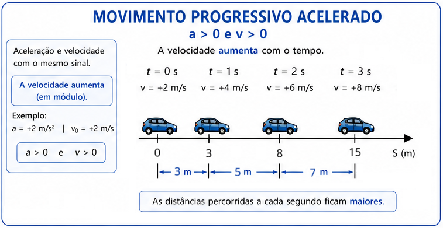
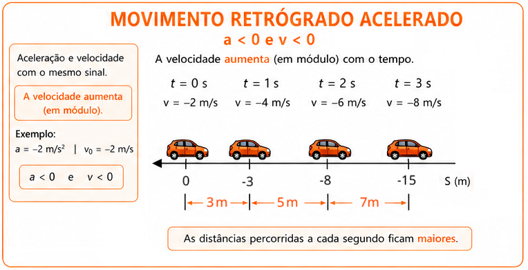
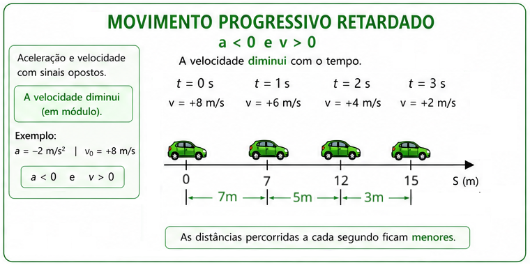
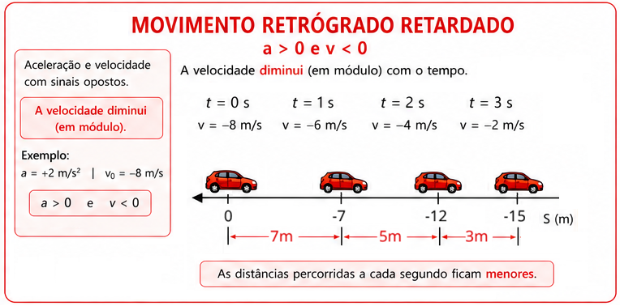

1º Ano | Aula 06: Movimento Uniformemente Variado (MUV)
📚 Resumo
O Movimento Uniformemente Variado (MUV) caracteriza-se por apresentar aceleração escalar constante e diferente de zero ($a = \text{constante} \neq 0$). Em consequência, a velocidade escalar do móvel sofre variações iguais em intervalos de tempo iguais.
O MUV é regido por três equações fundamentais: a Função Horária da Velocidade ($v = v_0 + a \cdot t$), a Função Horária da Posição ($S = S_0 + v_0 \cdot t + \frac{1}{2}a \cdot t^2$) e a Equação de Torricelli ($v^2 = v_0^2 + 2a \cdot \Delta S$), utilizada quando o tempo não é fornecido.
📖 Movimento Uniformemente Variado (MUV)
1. Conceito e Aceleração Escalar Constante
No MUV, a velocidade do corpo varia de maneira uniforme no decorrer do tempo. A taxa dessa variação é a aceleração escalar média, que coincide com a aceleração instantânea em qualquer instante:
Isolando as variáveis a partir do instante inicial $t_0 = 0$, obtemos o conjunto de equações do movimento:
Função Horária da Velocidade: $v = v_0 + a \cdot t$
Função Horária da Posição: $S = S_0 + v_0 \cdot t + \frac{1}{2}a \cdot t^2$
Equação de Torricelli: $v^2 = v_0^2 + 2a \cdot \Delta S$ (equação independente do tempo)
Velocidade Média no MUV: $v_m = \frac{v_0 + v}{2} = \frac{\Delta S}{\Delta t}$
3. Classificação do Movimento no MUV
No MUV, podemos classificar o movimento considerando dois aspectos:
o sentido do movimento e a variação da rapidez.
Essas classificações são independentes e podem ser combinadas.
3.1. Movimento Progressivo Acelerado
O movimento é progressivo quando a velocidade é positiva
($v > 0$), ou seja, o móvel desloca-se no sentido positivo da trajetória.
Ele é acelerado quando o módulo da velocidade aumenta.
Portanto, nesse caso, velocidade e aceleração possuem o
mesmo sinal:
$$v > 0 \quad \text{e} \quad a > 0$$

Figura 1: Movimento progressivo acelerado — velocidade e aceleração
possuem o mesmo sentido e o módulo da velocidade aumenta.
3.2. Movimento Retrógrado Acelerado
O movimento é retrógrado quando a velocidade é negativa
($v < 0$), indicando que o móvel se desloca no sentido negativo da
trajetória. Ele é acelerado quando o módulo da velocidade
aumenta. Nesse caso, velocidade e aceleração também possuem o
mesmo sinal:
$$v < 0 \quad \text{e} \quad a < 0$$

Figura 2: Movimento retrógrado acelerado — velocidade e aceleração
possuem o mesmo sentido e o módulo da velocidade aumenta.
3.3. Movimento Progressivo Retardado
O movimento é progressivo quando $v > 0$, mas é
retardado quando o módulo da velocidade diminui.
Portanto, velocidade e aceleração possuem
sinais contrários:
$$v > 0 \quad \text{e} \quad a < 0$$

Figura 3: Movimento progressivo retardado — velocidade e aceleração
possuem sentidos contrários e o módulo da velocidade diminui.
3.4. Movimento Retrógrado Retardado
O movimento é retrógrado quando $v < 0$, mas é
retardado quando o módulo da velocidade diminui.
Nesse caso, velocidade e aceleração possuem
sinais contrários:
$$v < 0 \quad \text{e} \quad a > 0$$

Figura 4: Movimento retrógrado retardado — velocidade e aceleração
possuem sentidos contrários e o módulo da velocidade diminui.
3.5. Regra Geral
A relação entre os sinais de velocidade e aceleração permite identificar
rapidamente se o movimento é acelerado ou retardado:
$v \cdot a > 0$:
movimento acelerado — velocidade e aceleração possuem
o mesmo sinal.
$v \cdot a < 0$:
movimento retardado — velocidade e aceleração possuem
sinais contrários.
💡 Física em Ação
🚗 Testes de Frenagem Automotiva
A Equação de Torricelli é amplamente utilizada pela engenharia automotiva para calcular a distância mínima de parada de um veículo viajando a determinada velocidade, assumindo desaceleração constante.
🛫 Decolagem de Aviões
Aeronaves comerciais realizam aceleração praticamente uniforme na pista de decolagem. Os pilotos usam as equações do MUV para calcular a distância necessária para atingir a velocidade de rotação ($v_R$).
✅ 5 Questões Resolvidas (R 1 a 5)
R 1: Interpretação das Funções Horárias
Enunciado: A função horária da posição de um móvel é dada por $S = 15 - 2t + 3t^2$ (em unidades do SI). Determine a posição inicial, a velocidade inicial e a aceleração escalar do móvel.
Resolução:
Comparando $S = 15 - 2t + 3t^2$ com o padrão $S = S_0 + v_0 \cdot t + \frac{1}{2}a \cdot t^2$:
• Posição inicial: $S_0 = \mathbf{15\text{ m}}$.
• Velocidade inicial: $v_0 = \mathbf{-2\text{ m/s}}$.
• Aceleração: $\frac{1}{2}a = 3 \implies a = 2 \cdot 3 = \mathbf{6\text{ m/s}^2}$.
R 2: Cálculo de Velocidade e Instante
Enunciado: Um móvel parte do repouso ($v_0 = 0$) com aceleração constante $a = 4\text{ m/s}^2$. Calcule sua velocidade no instante $t = 5\text{ s}$.
Resolução:
Utilizamos a Função Horária da Velocidade ($v = v_0 + a \cdot t$):
$v = 0 + 4 \cdot 5 = \mathbf{20\text{ m/s}}$.
R 3: Aplicação da Equação de Torricelli
Enunciado: Um carro viajando a $20\text{ m/s}$ freia uniformemente com desaceleração de $4\text{ m/s}^2$ ($a = -4\text{ m/s}^2$) até parar ($v = 0$). Qual a distância percorrida durante a frenagem?
Resolução:
Como o tempo não foi informado, usamos Torricelli ($v^2 = v_0^2 + 2a \cdot \Delta S$):
$0^2 = 20^2 + 2(-4)\Delta S \implies 0 = 400 - 8\Delta S \implies 8\Delta S = 400 \implies \Delta S = \mathbf{50\text{ m}}$.
R 4: Mudança de Sentido do Movimento
Enunciado: Um objeto é lançado com velocidade inicial $v_0 = -12\text{ m/s}$ e aceleração constante $a = 3\text{ m/s}^2$. Em que instante o móvel inverte o sentido de seu movimento?
Resolução:
A inversão de sentido ocorre no instante em que a velocidade escalar se anula ($v = 0$):
$v = v_0 + a \cdot t \implies 0 = -12 + 3t \implies 3t = 12 \implies t = \mathbf{4\text{ s}}$.
R 5: Posição Final em Movimento Acelerado
Enunciado: Um trem parte da posição $S_0 = 100\text{ m}$ com velocidade inicial de $10\text{ m/s}$ e aceleração de $2\text{ m/s}^2$. Determine sua posição no instante $t = 6\text{ s}$.
Enunciado: Um corpo possui função da velocidade $v = -10 + 2t$ (SI). Classifique o movimento nos instantes $t = 2\text{ s}$ e $t = 8\text{ s}$.
Resolução: Aceleração $a = +2\text{ m/s}^2 > 0$.
• Em $t = 2\text{ s} \implies v = -10 + 2(2) = -6\text{ m/s}$. Como $v < 0$ e $a > 0$ (sinais opostos), o movimento é retrógrado e retardado.
• Em $t = 8\text{ s} \implies v = -10 + 2(8) = +6\text{ m/s}$. Como $v > 0$ e $a > 0$ (mesmo sinal), o movimento é progrediente e acelerado.
P 7: Distância Percorrida a partir do Repouso
Enunciado: Uma partícula parte do repouso com aceleração de $3\text{ m/s}^2$. Qual a distância percorrida após $4\text{ s}$?
Enunciado: Um carro varia sua velocidade uniformemente de $10\text{ m/s}$ para $30\text{ m/s}$ em $5\text{ s}$. Qual foi a sua velocidade média e o deslocamento no intervalo?
Resolução: Velocidade média: $v_m = \frac{v_0 + v}{2} = \frac{10 + 30}{2} = \mathbf{20\text{ m/s}}$.
Deslocamento: $\Delta S = v_m \cdot \Delta t = 20 \cdot 5 = \mathbf{100\text{ m}}$.
P 9: Aceleração em Pista de Arrancada
Enunciado: Um dragster atinge $100\text{ m/s}$ partindo do repouso em uma pista de $200\text{ m}$. Supondo MUV, determine a aceleração do veículo.
Enunciado: Um motorista a $30\text{ m/s}$ aciona os freios, imprimindo uma desaceleração constante de $5\text{ m/s}^2$. Quanto tempo o carro leva para parar totalmente?
Resolução: Usando a função horária da velocidade com $v = 0$ e $a = -5\text{ m/s}^2$:
$0 = 30 - 5t \implies 5t = 30 \implies t = \mathbf{6\text{ s}}$.
🎓 TESTES (T 11 a 15)
🚧 EM BREVE!
Questões de vestibulares serão disponibilizadas em breve.